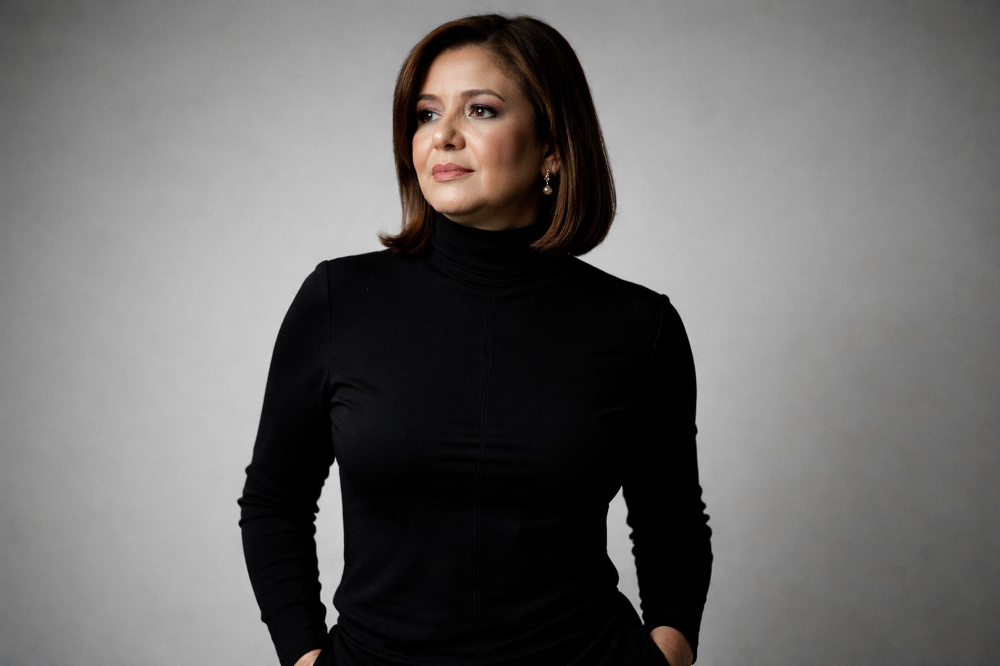

Criação de landing pages
Seu negócio merece uma página que se explique.
Uma presença digital clara, organizada e pensada para apresentar o que você faz a quem chega pelo seu Instagram.
Fale sobre seu projeto
O desafio
O interesse começa no post. A decisão pede clareza.
Depois de clicar no seu link, a pessoa precisa entender seu trabalho sem procurar respostas em vários lugares.
Uma landing page reúne sua apresentação, informações relevantes e um caminho simples para entrar em contato. Cada projeto é estruturado conforme o seu público e seu objetivo.
O que sua página pode reunir
Informação na ordem certa, com identidade própria.
Uma mensagem direta sobre o negócio, o serviço e para quem ele se destina.
Uma estrutura visual coerente com sua marca, conteúdo legível e respostas às dúvidas principais.
Um convite claro para a próxima etapa, sem caminhos confusos ou distrações.
Do primeiro clique até a conversa, cada detalhe comunica.
Quem cria
Prazer, Sayonara.
Trabalho com tecnologia e comunicação para transformar informações dispersas em páginas claras e funcionais. Planejo o texto, a estrutura e o visual para que a página apresente cada negócio com clareza.
Desenvolvo landing pages para profissionais e negócios de diferentes áreas, respeitando a identidade e as necessidades de cada projeto.
Conte sua ideiaSeu projeto
Vamos organizar sua presença em uma página?
Conte o que você oferece, para quem e o que espera que a página ajude a comunicar. Conversamos sobre o escopo e os próximos passos.
Conversar pelo WhatsApp